- 01 认知：ElasticSearch基础概念.md
- 02 认知：Elastic Stack生态和场景方案.md
- 03 安装：ElasticSearch和Kibana安装.md
- 04 入门：查询和聚合的基础使用.md
- 05 索引：索引管理详解.md
- 06 索引：索引模板(Index Template)详解.md
- 07 查询：DSL查询之复合查询详解.md
- 08 查询：DSL查询之全文搜索详解.md
- 09 查询：DSL查询之Term详解.md
- 10 聚合：聚合查询之Bucket聚合详解.md
- 11 聚合：聚合查询之Metric聚合详解.md
- 12 聚合：聚合查询之Pipline聚合详解.md
- 13 原理：从图解构筑对ES原理的初步认知.md
- 14 原理：ES原理知识点补充和整体结构.md
- 15 原理：ES原理之索引文档流程详解.md
- 16 原理：ES原理之读取文档流程详解.md
- 17 优化：ElasticSearch性能优化详解.md
- 18 大厂实践：腾讯万亿级 Elasticsearch 技术实践.md
- 19 资料：Awesome Elasticsearch.md
- 20 WrapperQuery.md
- 21 备份和迁移.md
因收到Google相关通知，网站将会择期关闭。相关通知内容
09 查询：DSL查询之Term详解
Term查询引入
如前文所述，查询分基于文本查询和基于词项的查询:
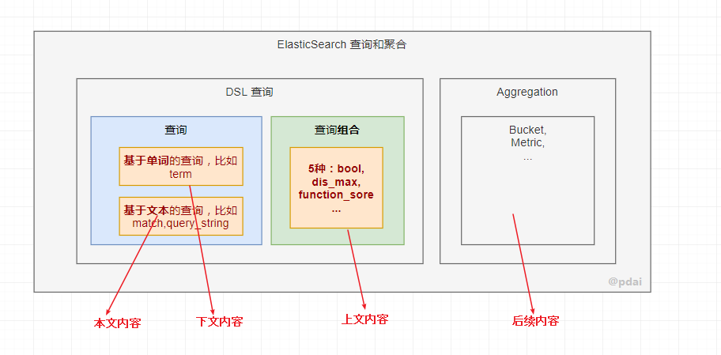
本文主要讲基于词项的查询。
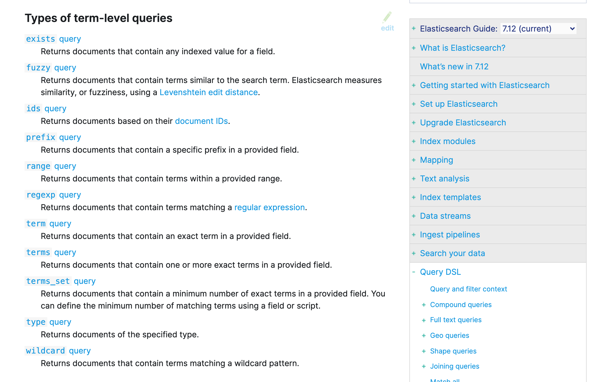
Term查询
很多比较常用，也不难，就是需要结合实例理解。这里综合官方文档的内容，我设计一个测试场景的数据，以覆盖所有例子。@pdai
准备数据
PUT /test-dsl-term-level
{
"mappings": {
"properties": {
"name": {
"type": "keyword"
},
"programming_languages": {
"type": "keyword"
},
"required_matches": {
"type": "long"
}
}
}
}
POST /test-dsl-term-level/_bulk
{ "index": { "_id": 1 }}
{"name": "Jane Smith", "programming_languages": [ "c++", "java" ], "required_matches": 2}
{ "index": { "_id": 2 }}
{"name": "Jason Response", "programming_languages": [ "java", "php" ], "required_matches": 2}
{ "index": { "_id": 3 }}
{"name": "Dave Pdai", "programming_languages": [ "java", "c++", "php" ], "required_matches": 3, "remarks": "hello world"}
字段是否存在:exist
由于多种原因，文档字段的索引值可能不存在：
- 源JSON中的字段是null或[]
- 该字段已”index” : false在映射中设置
- 字段值的长度超出ignore_above了映射中的设置
- 字段值格式错误，并且ignore_malformed已在映射中定义
所以exist表示查找是否存在字段。
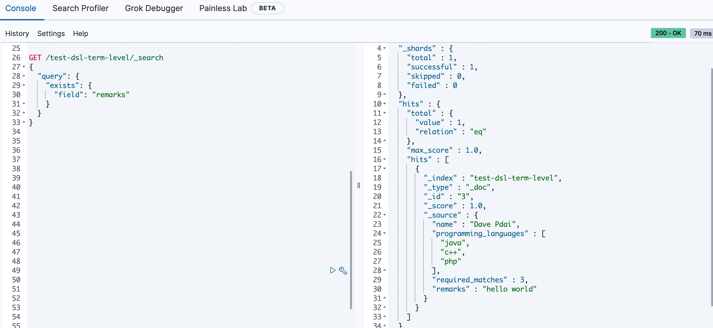
id查询:ids
ids 即对id查找
GET /test-dsl-term-level/_search
{
"query": {
"ids": {
"values": [3, 1]
}
}
}
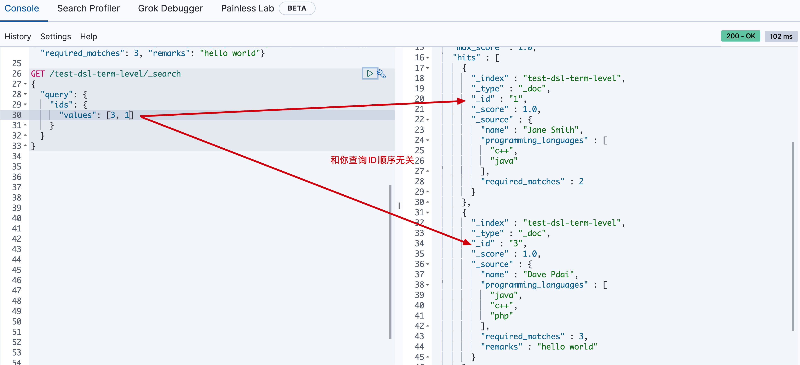
前缀:prefix
通过前缀查找某个字段
GET /test-dsl-term-level/_search
{
"query": {
"prefix": {
"name": {
"value": "Jan"
}
}
}
}
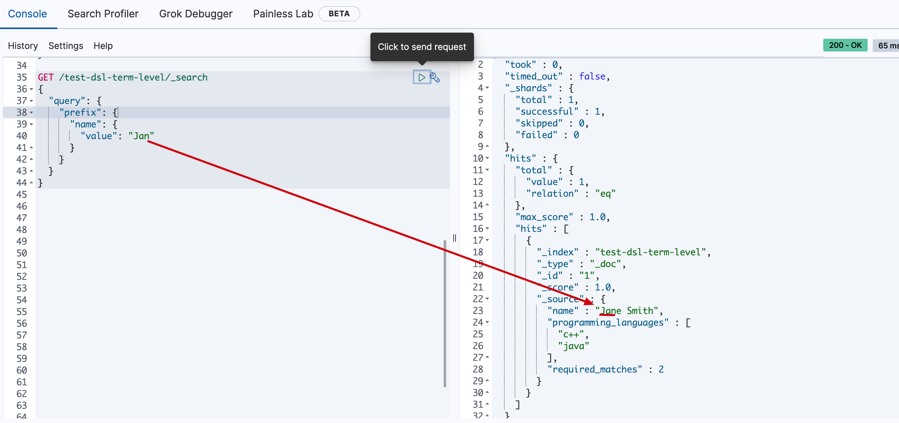
分词匹配:term
前文最常见的根据分词查询
GET /test-dsl-term-level/_search
{
"query": {
"term": {
"programming_languages": "php"
}
}
}
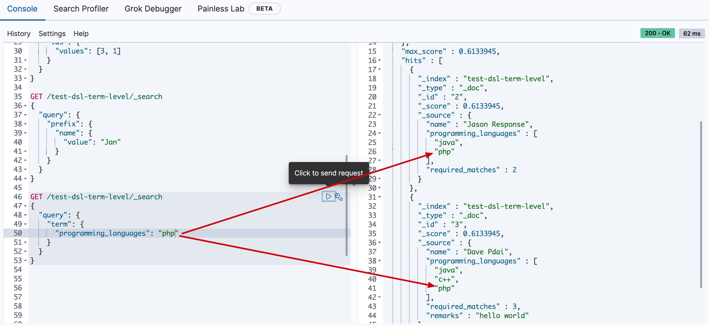
多个分词匹配:terms
按照读个分词term匹配，它们是or的关系
GET /test-dsl-term-level/_search
{
"query": {
"terms": {
"programming_languages": ["php","c++"]
}
}
}
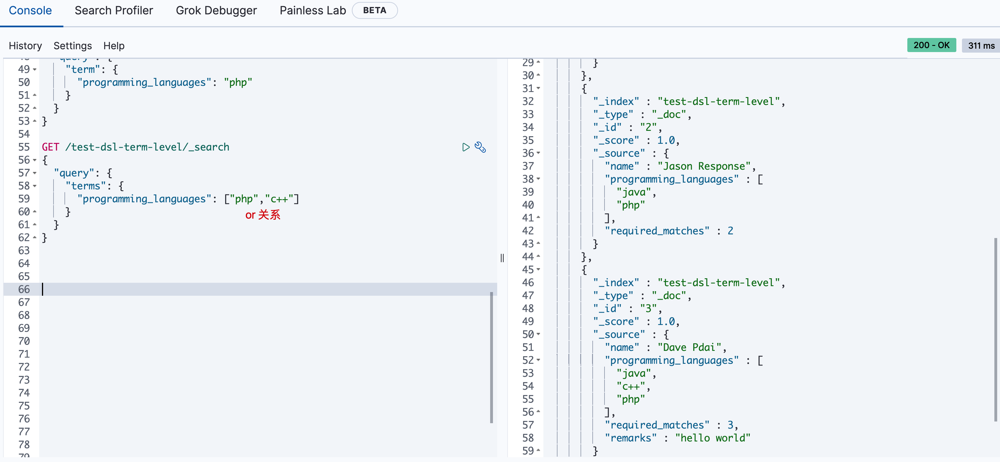
按某个数字字段分词匹配:term set
设计这种方式查询的初衷是用文档中的数字字段动态匹配查询满足term的个数
GET /test-dsl-term-level/_search
{
"query": {
"terms_set": {
"programming_languages": {
"terms": [ "java", "php" ],
"minimum_should_match_field": "required_matches"
}
}
}
}
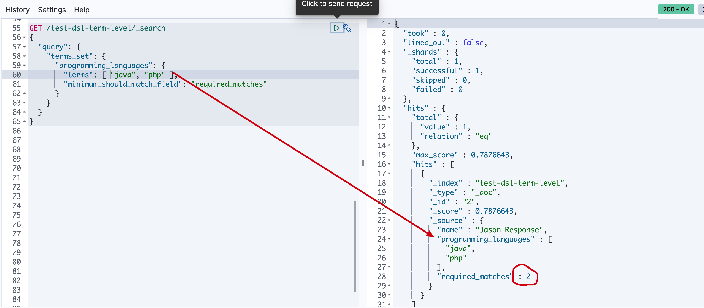
通配符:wildcard
通配符匹配，比如*
GET /test-dsl-term-level/_search
{
"query": {
"wildcard": {
"name": {
"value": "D*ai",
"boost": 1.0,
"rewrite": "constant_score"
}
}
}
}
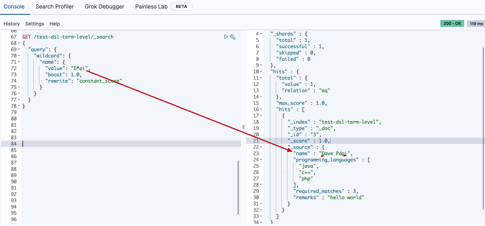
范围:range
常常被用在数字或者日期范围的查询
GET /test-dsl-term-level/_search
{
"query": {
"range": {
"required_matches": {
"gte": 3,
"lte": 4
}
}
}
}
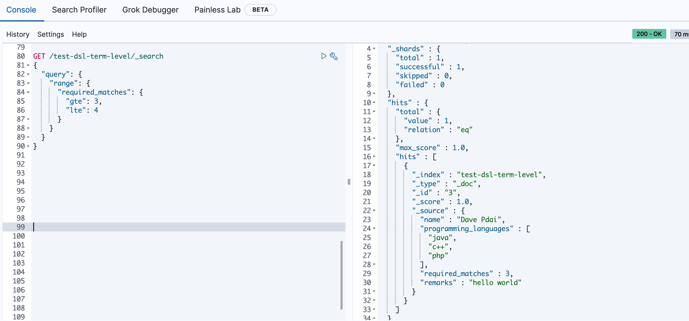
正则:regexp
通过[正则表达式]查询
以”Jan”开头的name字段
GET /test-dsl-term-level/_search
{
"query": {
"regexp": {
"name": {
"value": "Ja.*",
"case_insensitive": true
}
}
}
}
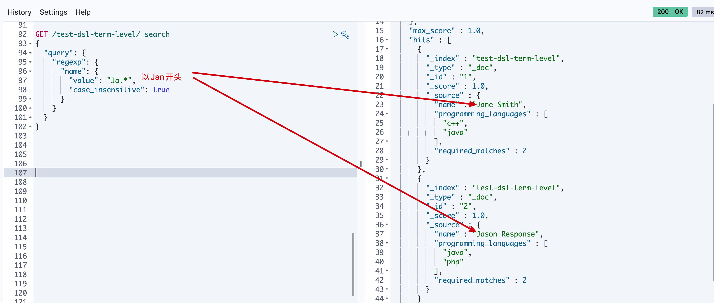
模糊匹配:fuzzy
官方文档对模糊匹配：编辑距离是将一个术语转换为另一个术语所需的一个字符更改的次数。这些更改可以包括：
- 更改字符（box→ fox）
- 删除字符（black→ lack）
- 插入字符（sic→ sick）
- 转置两个相邻字符（act→ cat）
GET /test-dsl-term-level/_search
{
"query": {
"fuzzy": {
"remarks": {
"value": "hell"
}
}
}
}
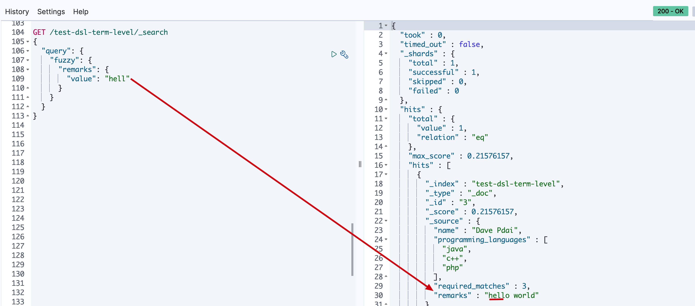
参考文章
https://www.elastic.co/guide/en/elasticsearch/reference/current/term-level-queries.html
© 2019 - 2023 Liangliang Lee. Powered by gin and hexo-theme-book.